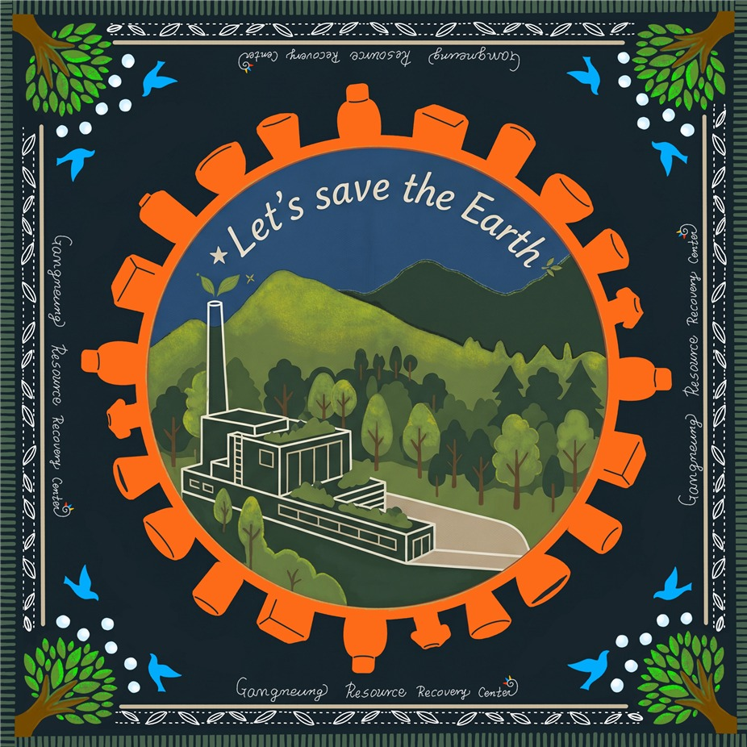
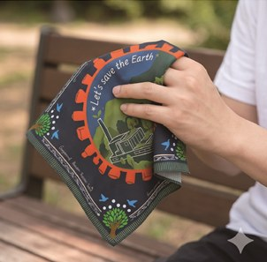
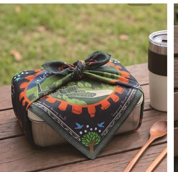
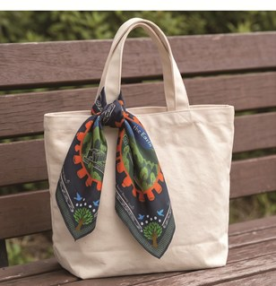

강릉시 자원순환센터 기념품 손수건의 디자인 의미와 색상 개발 과정을 보고드립니다.

짙은 남색 바탕과 보색 대비를 이루어 멀리서도 눈에 띄고, 자원순환센터의 ‘에너지 회수’ 이미지를 가장 잘 전달함
“순환의 고리,
다시 숲이 되다”
아사면 · 종이케이스 + 스티커 포장
화이트 · 옐로 · 오렌지 비교 후 선정
강릉시 자원순환센터는 생활폐기물을 처리하고 그 과정에서 에너지를 회수하는 시설이며, 시민과 학생을 대상으로 견학 프로그램을 운영함. 견학의 기억을 일상으로 이어 줄 기념품으로 다시 쓰는 물건을 선택함.
순환의 고리,
다시 숲이 되다
※ 항목을 누르면 해당 부분이 강조됩니다. 6초마다 자동으로 넘어갑니다.
바탕(남색)·숲(초록)·하늘(청색)은 고정하고, 메시지의 중심인 ‘순환의 톱니’ 색만 바꾸어 세 가지 시안을 비교함. 스크롤하면 시안이 차례로 바뀝니다.
순환 고리를 연한 미색으로 표현해 그림 속 숲과 하늘이 가장 돋보이는 안.
햇살 같은 노랑으로 친근함과 생동감을 더한 안.
남색·청색 바탕과 정반대 위치의 색(보색)으로 순환 고리가 가장 강하게 살아나는 안.
| 시안 | 명도 대비 (바탕 남색 기준) | 색상 대비 (보색 정도) | 오염 내구성 | 메시지 적합성 | 종합 |
|---|
※ 명도 대비·색상 대비는 화면 색상값(HEX)으로 계산한 수치이며, 원단 인쇄 시 실제 색은 샘플로 최종 확인 예정. 오염 내구성·메시지 적합성은 디자이너 평가임.
스포이드로 바꿀 부분의 색을 찍고, 색상표에서 원하는 색을 찍으면 손수건 전체에서 같은 색이 한 번에 바뀝니다. 그림자와 질감은 그대로 유지됩니다.
95가로·세로 45cm 정사각
전량 개별 포장 납품
얇고 부드러워 흡수와 건조가 빠름
+ 기관 스티커 부착



견학에서 들은 내용을 손수건 그림으로 다시 떠올리게 함
휴지·물티슈·비닐봉투를 대신하는 생활 속 실천 도구
쓸 때마다 기관명과 메시지가 노출되는 움직이는 홍보물
‘소각시설’의 딱딱한 인상을 숲과 새가 있는 따뜻한 이미지로 전환